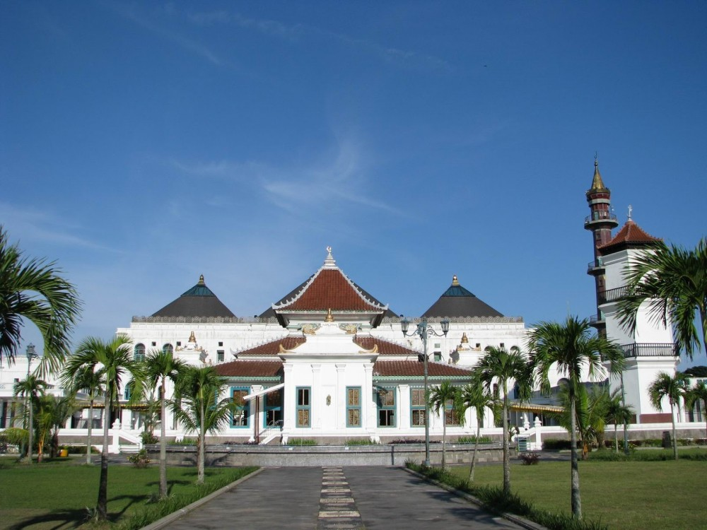
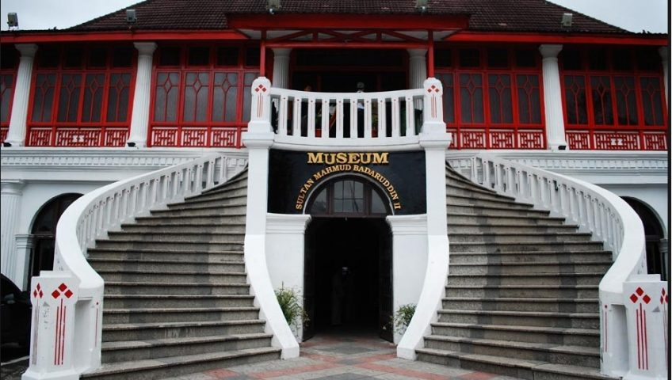
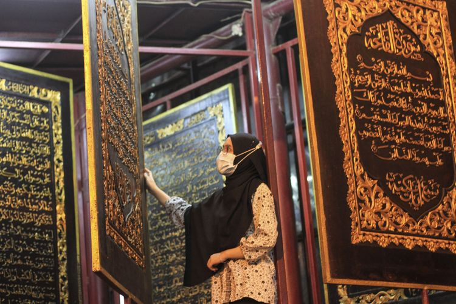

Sejarah

Kota Palembang merupakan kota tertua di Indonesia berumur setidaknya 1337 tahun jika berdasarkan prasasti Sriwijaya yang dikenal sebagai prasasti Kedudukan Bukit. Menurut Prasasti yang berangka tahun 16 Juni 682. Pada saat itu
oleh penguasa Sriwijaya didirikan Wanua di daerah yang sekarang dikenal sebagai kota Palembang. Menurut topografinya, kota ini dikelilingi oleh air, bahkan terendam oleh air. Air tersebut bersumber baik dari sungai maupun rawa,
juga air hujan. Bahkan saat ini kota Palembang masih terdapat 52,24 % tanah yang yang tergenang oleh air (data Statistik 1990). Berkemungkinan karena kondisi inilah maka nenek moyang orang-orang kota ini menamakan kota ini
sebagai Pa-lembang dalam bahasa melayu Pa atau Pe sebagai kata tunjuk suatu tempat atau keadaan; sedangkan lembang atau lembeng artinya tanah yang rendah, lembah akar yang membengkak karena lama terendam air (menurut kamus
melayu), sedangkan menurut bahasa melayu-Palembang, lembang atau lembeng adalah genangan air. Jadi Palembang adalah suatu tempat yang digenangi oleh air.
Kondisi alam ini bagi nenek moyang orang-orang Palembang menjadi modal mereka untuk memanfaatkannya. Air menjadi sarana transportasi yang sangat vital, ekonomis, efisien dan punya daya jangkau dan punya kecepatan yang tinggi.
Selain kondisi alam, juga letak strategis kota ini yang berada dalam satu jaringan yang mampu mengendalikan lalu lintas antara tiga kesatuan wilayah:
Georgrafi

Palembang merupakan salah satu kota metropolitan di Indonesia dan secara geografis terletak antara 2o 52′ sampai 3o 5′ Lintang Selatan dan 104o 37′ sampai 104o 52′ Bujur Timur dengan ketinggian rata-rata 8 meter dari permukaan
air laut. Luas wilayah Kota Palembang sebesar 400,61 km2 yang secara administrasi terbagi atas 16 kecamatan dan 107 kelurahan.
Kota Palembang merupakan ibukota Propinsi Sumatera Selatan dengan batas wilayah yaitu di sebelah utara, timur dan barat dengan Kabupaten Banyu Asin; sedangkan sebelah selatan berbatasan dengan Kabupaten Muara Enim. Keadaan alam
kota Palembang merupakan daerah tropis lembah nisbi, dengan suhu rata-rata sebagian besar wilayah Kota Palembang 21o– 32o Celsius, curah hujan 22 – 428 mml per tahun.
Wisata
Museum Sultan Mahmud Badaruddin II

Kota Palembang merupakan ibukota Propinsi Sumatera Selatan dengan batas wilayah yaitu di sebelah utara, timur dan barat dengan Kabupaten Banyu Asin; sedangkan sebelah selatan berbatasan dengan Kabupaten Muara Enim. Keadaan
alam kota Palembang merupakan daerah tropis lembah nisbi, dengan suhu rata-rata sebagian besar wilayah Kota Palembang 21o– 32o Celsius, curah hujan 22 – 428 mml per tahun.
Museum Al-Qur'an Al-Akbar

Wisata religi di Palembang, Sumatera Selatan, ternyata menjadi daya tarik wisatawan hingga mancanegara untuk berkunjung. Palembang yang menjadi kota tertua di Indonesia ini ternyata memiliki Al Quran terbesar di dunia yang
terletak di Jalan Mohammad Amin, Gandus, Kecamatan Gandus. Al Quran Al Akbar atau yang sering disebut Al Quran raksasa ini terbuat dari kayu tembesu dengan ukuran tinggi mencapai 15 meter. Setiap lembar halaman Al Quran
berukuran 177cm x 140cm x 2,5 cm. Ada 30 juz dalam Al Quran raksasa tersebut yang diukir dengan pahatan berwarna emas khas Palembang. Selain itu, terdapat 630 halaman yang dilengakapi dengan tajwid serta doa khataman bagi
pemula.